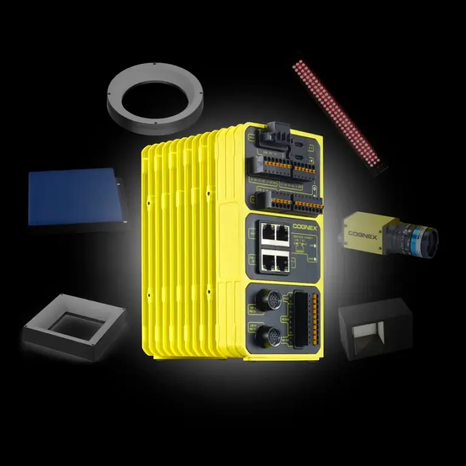

Cognex Product Library
Cognex 제품
어떤 Cognex 제품을 봐야 할지 모르겠다면 먼저 검사 방식부터 골라보세요. 2D·3D 비전, 비전 컨트롤러, 산업용 바코드 리더기와 비전 소프트웨어를 제품군별로 나눠두었습니다. 각 모델을 누르면 적용 가능한 검사와 주요 특징을 바로 확인할 수 있습니다.





AI Vision Software
VisionPro Deep Learning
복잡한 외관검사를 위한 AI 이미지 분석 도구
불규칙한 외관 불량 · 분류 · OCR 등 룰 기반으로 어려운 검사용 AI 도구
검색 조건에 맞는 제품이 없습니다. 모델명을 다시 확인하거나 제품 선정 문의를 이용해 주세요.
Hikrobot Machine Vision
Hikrobot 머신비전 · AI 시스템
AI 스마트카메라나 산업용 카메라를 조금 더 유연한 예산으로 구성해야 한다면 Hikrobot도 함께 살펴보세요. VisionMaster를 활용한 AI 검사부터 일반 머신비전까지 검사 난이도와 필요한 기능을 보고 Cognex와 비교해드리겠습니다.
Hikrobot AI Smart Camera
AI 검사와 딥러닝을 스마트카메라 기반으로 구성할 때 검토할 수 있는 제품군
Hikrobot Industrial Camera
Area Scan을 비롯한 PC 기반 머신비전 시스템용 산업용 카메라
VisionMaster
Classification · Detection · Segmentation · AI OCR 등 검사 프로그램 구성을 위한 비전 플랫폼
Edge Learning
현장에서 비교적 빠른 학습과 적용이 필요한 AI 검사를 검토할 수 있는 방식
Engineering Services
ASPEC 머신비전 솔루션
제품만 고르는 것으로 끝내지 않습니다. 검사 대상과 광학조건, 제어 방식, 생산 데이터가 어디로 가야 하는지까지 알려주세요. 실제 라인에서 필요한 범위를 하나씩 같이 맞춰보겠습니다.

Cognex 비전 시스템
스마트카메라가 필요한지, PC 기반 VisionPro가 맞는지, 전용 DataMan 리더기가 더 나은지는 검사 항목을 보고 고르세요. 현재 사용 중인 Cognex 장비가 있다면 그대로 활용할 수 있는지도 함께 확인해드리겠습니다.
In-Sight · VisionPro · DataMan · Cognex AI 검사 기능

AI 비전검사
스크래치, 찍힘, 얼룩, 이물처럼 불량 모양이 매번 달라 Rule-Based 조건을 잡기 어렵다면 AI 검사를 검토해볼 수 있습니다. 정상·불량 샘플을 보여주시면 AI가 맞는지, 기존 비전 툴로도 충분한지부터 같이 확인해보겠습니다.

OCR검사·OCV검사
유통기한, LOT No., 제조번호나 각인 문자를 읽어야 하나요? 문자 내용만 볼지, 인쇄 누락·흐림·위치까지 함께 검사할지 먼저 정하면 OCR과 OCV 구성을 훨씬 쉽게 잡을 수 있습니다. 실제 제품 이미지를 보내주시면 어떤 방식이 맞는지부터 살펴보겠습니다.

바코드리더기
1D·2D, Data Matrix, QR, DPM 중 어떤 코드를 읽어야 하는지 알려주세요. 코드 크기, WD, 이동속도와 표면 반사까지 확인하면 DataMan 모델과 조명 조건을 훨씬 빠르게 좁힐 수 있습니다. 이미 쓰고 있는 리더기가 불안정하다면 장비를 바꾸기 전에 촬영 영상부터 같이 확인해보겠습니다.

머신비전 조명·케이블·렌즈
카메라보다 먼저 조명을 바꿔야 해결되는 검사도 많습니다. 반사, 투과, 미세 스크래치, 각인처럼 영상이 잘 나오지 않는다면 제품 샘플을 보여주세요. Area Scan·Line Scan·3D 산업용 카메라와 함께 머신비전 렌즈, 동축·돔·백라이트, 조명 컨트롤러까지 어떤 조합이 맞는지 실제 영상으로 비교해보겠습니다.
머신비전 조명 · 머신비전 케이블 · 머신비전 렌즈 조명·케이블 상세 보기

비전 소프트웨어
카메라 검사 결과를 화면에 보여주는 것만 필요한지, 이미지 저장·통계·레시피·PLC·MES까지 연결해야 하는지 알려주세요. C#·Python 기반 검사 UI부터 로봇비전 좌표 전송까지 필요한 기능만 골라서 구성할 수 있습니다. 기존 프로그램이나 설비가 있다면 새로 만드는 것보다 연동해서 쓰는 방법부터 살펴보겠습니다.
기존 장비 비교 검토
지금 쓰는 장비를 꼭 교체해야 하는지부터 확인해보세요. 검사 성능이 부족한 건지, 조명이나 렌즈가 문제인지, 프로그램을 수정하면 되는지에 따라 필요한 비용이 크게 달라질 수 있습니다. 기존 구성과 새 장비를 함께 놓고 어떤 방법이 나은지 비교해드리겠습니다.
예산형 머신비전 구성
예산이 정해져 있다면 처음부터 말씀해주세요. 가장 비싼 카메라를 쓰는 것보다 실제로 필요한 해상도와 처리속도를 먼저 확인하는 편이 낫습니다. 검사 품질에 영향을 주지 않는 부분은 줄이고, 반드시 필요한 곳에는 비용을 쓰는 방향으로 같이 맞춰보겠습니다.
현장에서 이런 검사를 많이 문의하십니다
- 제약·의료 포장 OCR / OCV
- 생산일자 · LOT No. 검사
- 의료기기 라벨 · 바코드 판독
- 자동차 부품 AI 외관검사
- 전자부품 치수 · 유무검사
- 반도체 부품 정렬 · 위치검사
- 비닐 · 필름 난반사 코드 판독
- 조립 누락 · 방향 · 부품 유무검사
검사하려는 제품이 위 목록에 없어도 괜찮습니다. 정상·불량 샘플이나 현재 촬영 이미지를 보내주시면 어떤 방식으로 접근할 수 있을지부터 확인해보겠습니다.